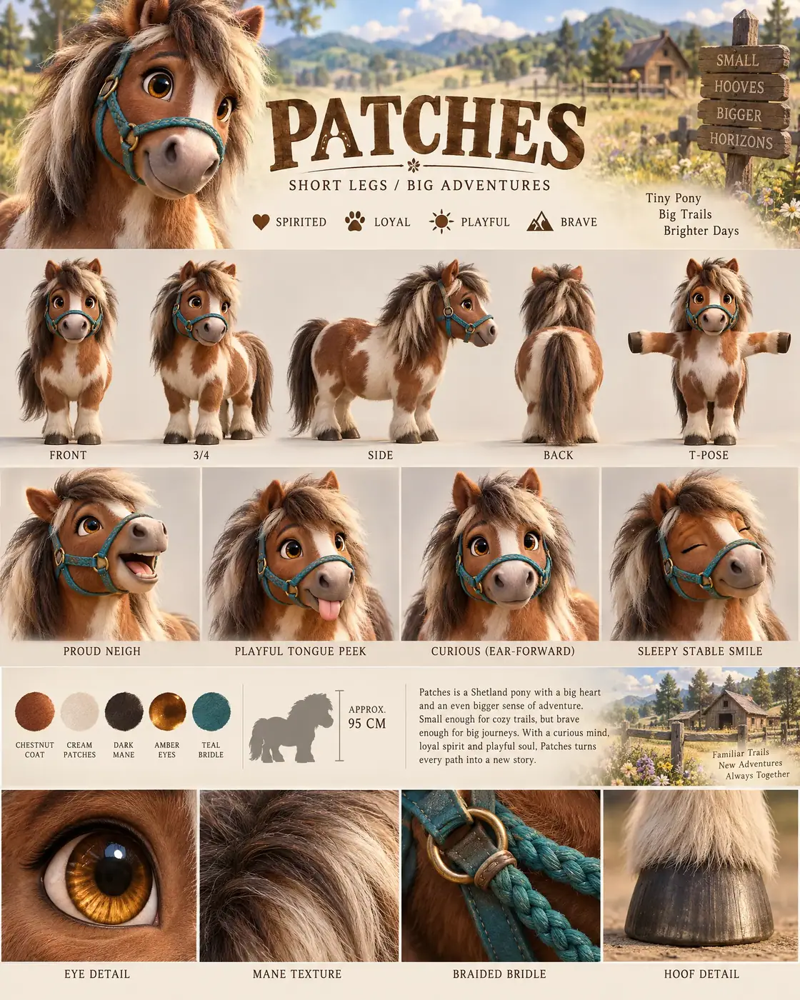

#27 of 100
Patches
Shetland pony
Pets & FarmSHORT LEGSBIG ADVENTURES
- Species
- Shetland pony
- Collection
- Pets & Farm
- Height
- 95 CM
- Personality
- SPIRITEDLOYALPLAYFULBRAVE
- Colour palette
- CHESTNUT COATCREAM PATCHESDARK MANEAMBER EYESTEAL BRIDLE
- Expressions
- proud neigh
- playful tongue peek
- curious ear-forward look
- sleepy stable smile
- Detail panels
- EYE DETAIL
- MANE TEXTURE
- BRAIDED BRIDLE
- HOOF DETAIL
- Character note
- Patches being small enough for cozy trails and brave enough for big journeys
Reference sheet prompt
Cute Shetland pony named PATCHES, with oversized amber eyes, a rounded chestnut-and-white coat, fluffy mane, short sturdy legs, tiny ears, and a teal braided bridle. A spirited little trail companion high-end 3D animated feature reference sheet, portrait 4:5 board, original character, header “PATCHES” with tagline “SHORT LEGS / BIG ADVENTURES,” traits “SPIRITED / LOYAL / PLAYFUL / BRAVE” full-body turnaround — exactly five views: front / 3-4 / side / back / T-pose, coat patches, mane, bridle, hooves, and proportions consistent, labels beneath each pose row of 4 expressions: proud neigh, playful tongue peek, curious ear-forward look, sleepy stable smile palette swatches CHESTNUT COAT, CREAM PATCHES, DARK MANE, AMBER EYES, TEAL BRIDLE rolling pasture habitat accents with wooden fences, wild grasses, hills, and distant stable shapes in the information band, approximate height “APPROX. 95 CM,” bio about Patches being small enough for cozy trails and brave enough for big journeys bottom macro panels labeled EYE DETAIL, MANE TEXTURE, BRAIDED BRIDLE, HOOF DETAIL 8k render, rounded pony anatomy, soft mane, no extra horses, no logos